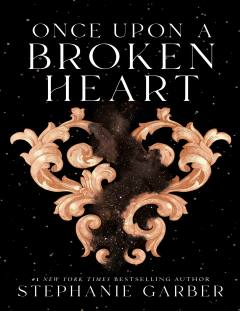

TBEvangeline va Jacksning sehrli va xavfli sarguzashtlari davom etadi.
Ushbu asar Stephanie Garberning mashhur trilogiyasining ikkinchi qismi bo'lib, Evangeline Fox va Jacks o'rtasidagi murakkab munosabatlarni davom ettiradi. Qahramonlar sehrli dunyoda xavfli sirlar va kutilmagan xiyonatlar bilan to'qnash kelishadi. Kitob sevgi, qasos va taqdir mavzularini o'z ichiga olgan qiziqarli fantastik sarguzashtdir.